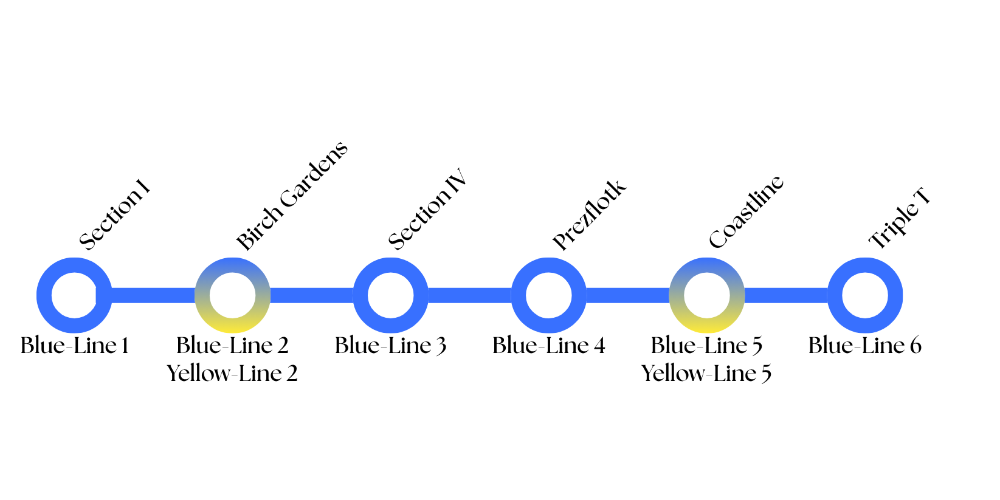
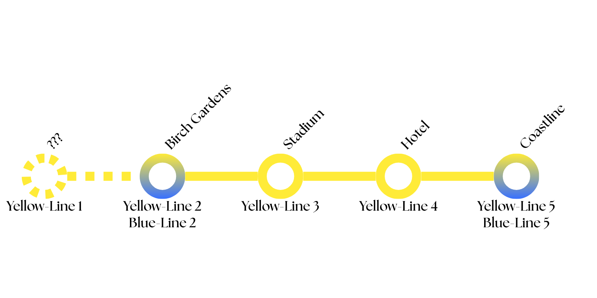

Shrublands Railway System (SRS)

The SRS currently has 3 lines: The
Blue-Line (BL), The
Yellow-Line (YL), The
Green-Line (GL)
Note that The
Green-Line (GL) currently only
has services for passengers from
Section I to
Section III West.
The Blue-Line (BL)

For easy identification, the
Blue-Line is differentiated by
the ornament
{}{}{}
As of June 18th, 2026, The
Blue-Line has 5 stations with
2 of them being an interchange with the
Yellow-Line.
Blue-Line consists of the
following:
Section I (Normal,
Blue-Line 1),
Birch
Gardens (Interchange,
Blue-Line 2 and
Yellow-Line 2),
Section
IV (Normal, Blue-Line 3),
Prezflotk (Normal,
Blue-Line 4),
Coastline
(Interchange, Blue-Line 5 and
Yellow-Line
5).
Triple T (Normal,
Blue-Line 6)
The Yellow-Line (YL)

For easy identification, the
Yellow-Line is differentiated
by the ornament
<><><>
As of June 18th, 2026, The
Yellow-Line has 4 stations
with 2 of them being an interchange with the
Blue-Line.
Yellow-Line consists of the
following:
Birch Gardens (Interchange,
Yellow-Line 2 and
Blue-Line 2),
Stadium
(Normal, Yellow-Line 3),
Hotel (Normal,
Yellow-Line 4),
Coastline (Interchange,
Yellow-Line 5 and
Blue-Line 5).
Note that the stationYellow-Line
1 is still unknown and further information will be informed in the
future.